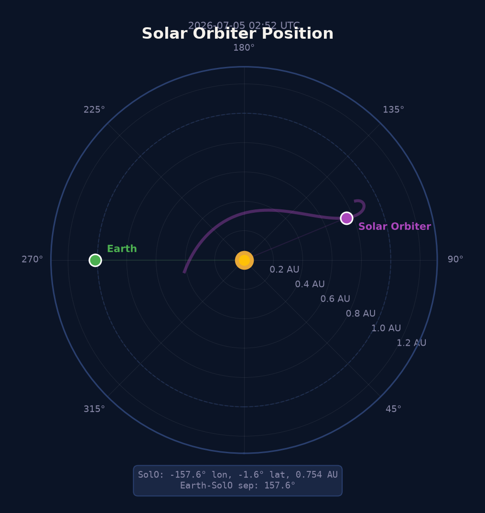

Earth-SolO Sep.
--
Inclination
--
Distance
--

EUI/FSI
174 Å
EUI/FSI
304 Å
Loading...
Position: JPL Horizons · EUI: SIDC/ROB · SunPy
STIX→GOES Flux Estimator
STIX 실시간 데이터에서 GOES급 자동 추정
Loading STIX data...
STIX X-ray Light Curves
Quick-Look counts @ 1 AU (거리 보정, 1분 평균) · Loading...
STIX QL: STIX Data Center (FHNW)
STIX Flare List
Solar Orbiter/STIX 최근 7일 X선 플레어 관측 목록 · --건 감지
| Peak (UTC) | GOES Class | Duration | Peak Counts |
|---|---|---|---|
| Loading STIX data... | |||
STIX: STIX Data Center (FHNW) · GOES class: Xiao+2023 · BKG method: Stiefel+2025